2. linux系统开发-源码编译
走进兵工厂：全志 T113 源码编译大揭秘
【核心概念导入：什么是“交叉编译”？】 很多新手会问：“既然要在 T113 上跑 Linux，那我直接在 T113 开发板上编译源码不行吗？” 答案是：理论上行，但实际上你会等到天荒地老。T113 的大脑（几十兆内存，双核 A7）跑跑业务绰绰有余，但面对几百万行的 Linux 源码，它会直接宕机。
所以，我们需要引入一个强大的“兵工厂”——一台性能强劲的 Ubuntu 电脑（可以是虚拟机，也可以是 WSL）。 我们在性能强大的 x86 架构电脑上，去编译出能在体积小巧的 ARM 架构（T113）上运行的代码，这个过程就叫做交叉编译（Cross-Compilation）。
【手把手实操：全志 Tina Linux 编译“四步曲”】
全志官方的 SDK（软件开发工具包）把复杂的编译过程做了极大的简化，基本上就是四句口诀的操作：
第一步：搬砖入场（拉取源码与配置环境）
- 实操： 将全志官方提供的 Tina Linux SDK 压缩包（或者通过 Git 仓库）解压到你的 Ubuntu 电脑里。这就像是把建房子的图纸和砖头都拉到了工地上。
- AI 避坑辅助： 编译 Linux 需要安装一堆依赖包（比如
gcc,make,libncurses5-dev等）。不要去死记硬背！直接问 AI：“我要在 Ubuntu 20.04 上编译全志 Tina Linux，请给我一键安装所有依赖项的apt-get命令。” 然后复制、粘贴、回车。
第二步：唤醒流水线（初始化环境）
- 输入命令：
source build/envsetup.sh - 干中学： 这句命令就像是给流水线通上电，它会把全志特有的编译指令（比如后面的
lunch和pack）加载到当前的终端里。没有这一步，后面的机器根本不听你指挥。
第三步：选择产品型号（Lunch 菜单）
- 输入命令：
lunch - 实操： 敲下回车后，屏幕上会弹出一个像餐厅菜单一样的列表，列出了 SDK 支持的各种开发板。这时候，输入我们 HM-T113-CORE 对应的编号（比如
t113-evb1）。 - 降维解读： 这就相当于告诉兵工厂的机器臂：“听好了，今天我们要造的不是大平板，也不是电视机，而是 HM-T113-CORE 这个特定型号的主板！”
第四步：一键打包，见证奇迹（Make & Pack）
- 输入命令：
make -j8（开始编译，-j8代表火力全开，调用你电脑的 8 个线程） - 过程： 此时屏幕上会疯狂滚动成千上万行代码，不要害怕，去喝杯咖啡。这是兵工厂在把 C 语言炼化成机器能懂的二进制。
- 压轴指令（全志独门绝技）： 编译完成后，敲下最后一条神圣的命令：
pack。 - 成果： 这条指令会把刚刚编译出来的内核、设备树、文件系统，像包饺子一样，完美地压制成一个单独的
t113_linux_xxx.img文件。
这就是我们 Day 1 烧录时用到的那个 .img 文件的真正来历！
研发心态建设：报错才是常态：
在这节课的最后，必须要给大家打一剂预防针。 编译 Linux 源码，不报错是不可能的。由于每个人的 Ubuntu 环境不同，经常会遇到缺文件、版本不对的红色 Error 提示。
过去的解法： 把报错信息扔进百度，在各种过时的技术博客里大海捞针，找一天都找不出原因，最后愤而放弃。 我们现在的解法： 直接把终端里的最后十行报错信息复制下来，扔给大模型（Kimi/ChatGPT），加上一句：“我在 Ubuntu 编译全志 T113 Linux 遇到这个报错，怎么解决？” AI 会在三秒钟内告诉你缺了什么依赖，并直接给出修复命令。这就是现代开发者的降维打击！
原码编译
环境准备
配置阿里云作为依赖下载源, 可以加快后边依赖下载速度，避免走国外服务器导致的下载卡顿，只需要一次配置即可。
- 按 Win 键，搜索
soft，打开Software & Updates
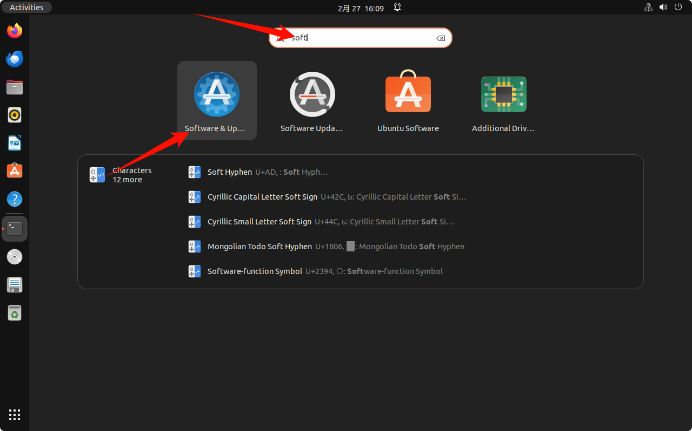
- 按照如下步骤选的 aliyun 源（阿里云）
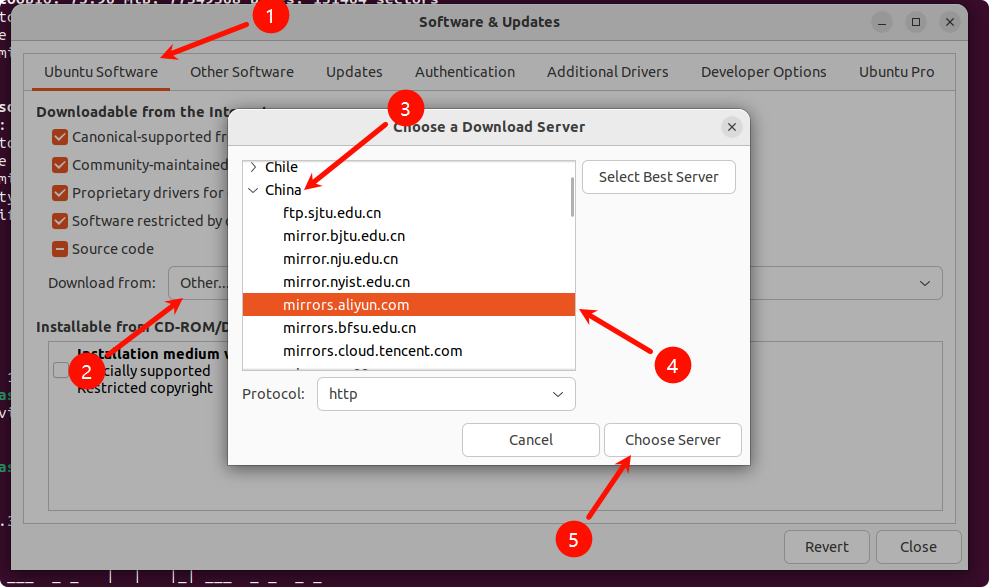
然后点击 Close
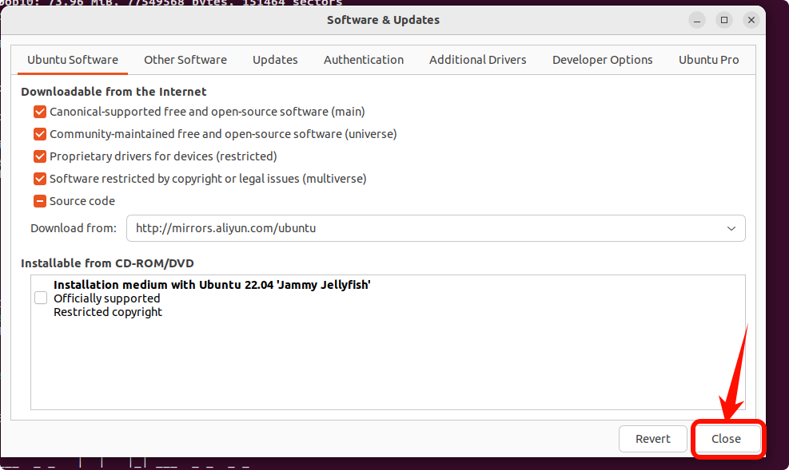
随后等待 Reload
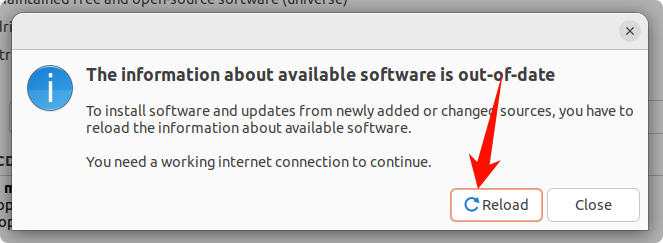
远程连接开启
开启远程连接ssh服务
[codeblock]如果不安装此服务, 会在使用ssh或scp拷贝数据时报错如下:
[codeblock]源码准备
上传数据包到虚拟机用户根目录, 注意
- 要把@前的itcast改成你自己的用户名, 路径也要保持一致(通过pwd查看)
- ip地址也要和虚拟机的ip一样(通过ipconfig)
- 此命令必须在tar文件所在目录里执行
上传数据到云服务器（如果电脑虚拟机比较卡， 可以用阿里云服务器）
[codeblock]检查文件指纹
linux下校验:
[codeblock]重要： 一定要检查md5是否一致。 网络传输，数据拷贝有可能会导致数据包有损坏。
win下校验(需要Shift + 右键打开Powershell执行):
[codeblock]流程： 选择 22.04的Ubuntu操作系统，阿里云。
fdisk -l
解压源代码
[codeblock]安装依赖
[codeblock]避免 pack的时候安装失败
缺乏 fsbuild 工具的库 fsbuild的库是32位的
[codeblock]避免编译报错，文件描述符不够
[codeblock]配置 python
[codeblock]初始化仓库
进入到T113-Tina5.0-V1.2目录, 确认包含.repo隐藏目录, 执行仓库同步操作
进行编译打包
初始化编译环境
[codeblock]进行编译配置, 输入5后, 按回车
[codeblock]此lunch在源码里只需要执行一次, 选择 t113-evb1_auto-tina (优先选择外置TF卡, 否则用片上eMMC)
执行编译 并打包
[codeblock]编译完成后，可以在 out 目录找到 .img 结尾的固件.
如果首次编译报错， 请再次执行 make 即可
看到如下内容, 代表make编译成功
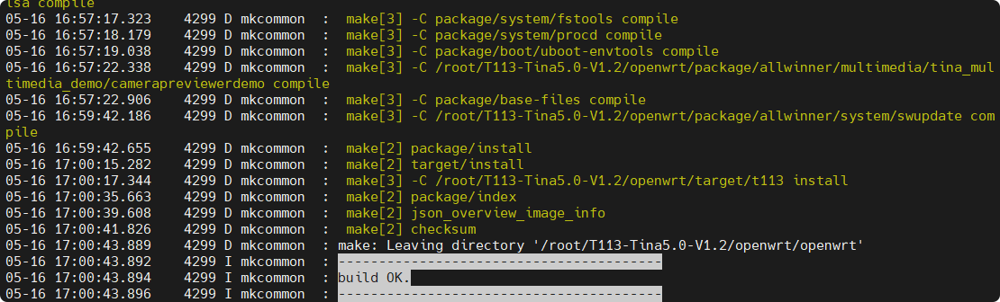
看到如下内容, 代表pack打包成功
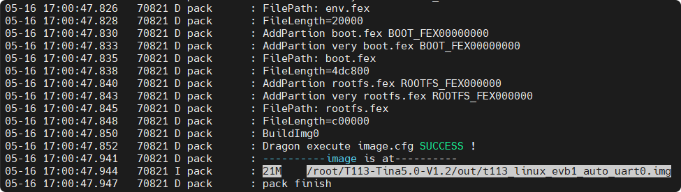
步骤详情介绍
🥇 第一阶段：搬运图纸与代码解压
在开始之前，我们需要把官方的源码包（图纸）放到我们的 Ubuntu 兵工厂里。
fdisk -l
- 作用： 查看当前系统的磁盘和分区列表。通常用来确认你插进 Ubuntu 的 U 盘（里面装了源码压缩包）挂载在哪个目录下，或者确认你的硬盘空间还够不够（编译 Linux 至少需要预留几十 G 的空间）。
cp T113-heima.tar.gz .(注：这里补全了目标路径)
- 作用： 把全志 T113 的源码压缩包拷贝到你当前的工作目录。
tar -vxf T113-heima.tar.gz
- 作用： 解压源码包。
-v显示解压过程，-x提取文件，-f指定文件名。这是万里长征的第一步。
📡 第二阶段：打通远程开发的“任督二脉”
没有人会直接对着虚拟机那个极其难用的小窗口敲代码，真正的高手都是用 SSH 远程连进去的。
sudo apt install openssh-server
- 作用： 在这台 Ubuntu 编译机上安装 SSH 服务。
- 实战意义： 装好后，学生就可以在 Windows 宿主机上，用 Xshell、MobaXterm 或 Termius 这种优雅的终端工具，通过局域网 IP 连进 Ubuntu 敲命令了，支持复制粘贴，效率翻倍。
🏭 第三阶段：安装流水线机床（核心依赖库）
这是编译 Linux 的重头戏。Linux 内核和全志的 SDK 需要用到大量的第三方 C/C++ 库和文本解析工具。(注：你提供的命令有重复，这里在逻辑上进行了合并说明)
sudo apt update&sudo apt upgrade -y
- 作用： 在安装任何软件前，先更新 Ubuntu 系统的软件源列表，确保接下来下载的工具都是最新且地址正确的。
sudo apt-get install build-essential subversion libncurses5-dev zlib1g-dev gawk flex bison quilt libssl-dev xsltproc libxml-parser-perl mercurial bzr ecj cvs unzip lib32z1 lib32z1-dev lib32stdc++6 libstdc++6 lib32ncurses5 rsync -y
- 作用： 一键安装编译所需的“大礼包”。
- 避坑讲解： 比如
build-essential包含了最基础的 gcc 编译器；libncurses5-dev是为了让我们后面能打开那个蓝底白字的menuconfig菜单界面；flex和bison是用来做词法和语法分析的，缺了它们内核根本编译不过。
⚠️ 经典天坑一：Python 版本的执念
sudo apt install python2sudo ln -s /usr/bin/python2 /usr/bin/python
- 作用： 安装 Python 2，并强行把系统的默认
python命令指向 Python 2。 - 实战意义： 很多新手死在这里。因为全志 Tina Linux 的很多底层构建脚本（包括 Google 的 repo 工具）是非常古老的，它们只认识 Python 2。而现在的 Ubuntu 默认都是 Python 3。这步“偷梁换柱”是成功编译的前提。
🧩 第四阶段：解决 64 位系统的“兼容性并发症”
全志 SDK 里面自带了一些打包工具（比如 pack 阶段要用到的 fsbuild），这些工具是很早以前用 32 位系统编译出来的。如果你用的是现代的 64 位 Ubuntu，它会直接报错说找不到这个工具（实际上是缺 32 位运行库）。
⚠️ 经典天坑二：fsbuild 库缺失（32 位兼容问题）
dpkg --add-architecture i386apt-get updateapt-get install -y libc6:i386 libstdc++6:i386 zlib1g:i386
- 作用： 强制给 64 位的 Ubuntu 开启 32 位（i386）架构支持，并安装 32 位的基础 C 库 (
libc6:i386) 和 C++ 库。 - 实战意义： 完美解决
pack打包出 img 镜像时报fsbuild失败的致命错误。
🚀 第五阶段：同步代码与解除火力限制
环境都配好了，准备开干前的最后检查。
apt install gitgit checkout ..repo/repo/repo sync -l
- 作用： 全志的源码非常庞大，是由很多个 git 仓库拼起来的。
repo就是用来管理这几十个 git 仓库的工具。 - 实战意义：
git checkout .用来清理解压后可能出现的代码状态异常；repo sync -l从本地缓存中同步出所有组件的完整代码，确保每一块“拼图”都在正确的位置上。
⚠️ 经典天坑三：文件描述符不够（编译中途崩溃）
ulimit -n 65536
- 作用： 把 Linux 系统允许同时打开的文件数量上限，从默认的 1024 个拉高到 65536 个。
- 实战意义： 当你敲下
make -j8多线程编译 Linux 源码时，几千个 C 文件会被同时读取。如果不加这句，系统会强行掐断编译，报Too many open files。加了这句，兵工厂才能火力全开。
用这种“排雷式”的讲法，不仅交代了命令的作用，更是把底层开发的经验直接传授给了学生。
既然环境已经配置得如铜墙铁壁一般，接下来，我们是不是要引导他们输入 source build/envsetup.sh 和 lunch，开始见证几百万行代码被炼化成 .img 镜像的奇迹时刻了？
得到out目录下的
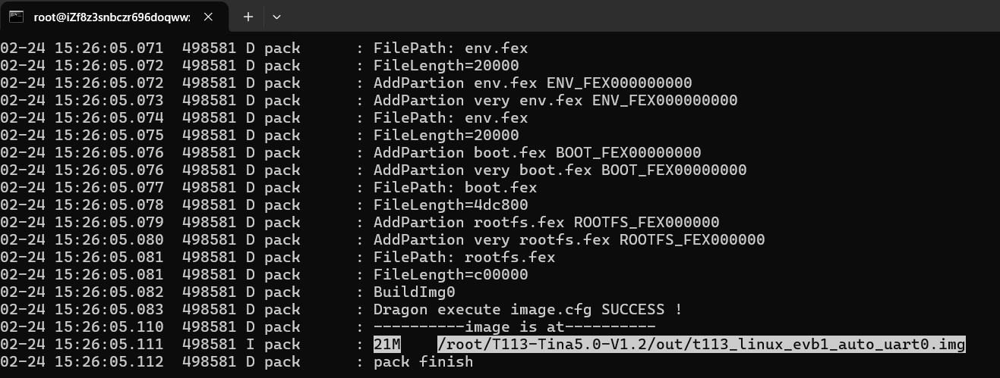
然后就能烧录了。 参考系统烧录。
如果你已经成功走到这一步骤，那么恭喜你，已经成功了90%啦。
编译错误处理
make 报错则重新执行一次 make
[codeblock]输出如下内容则为成功:
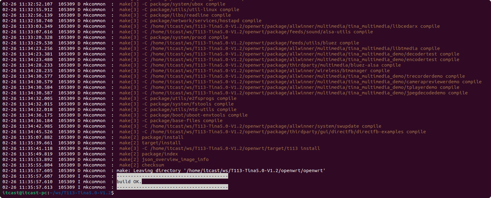
阿里云云服务
复制ID
复制ID，发给我，我把镜像共享给你。
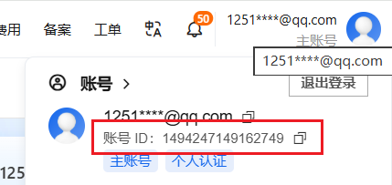
然后给账号里面充值100块钱，用不完的钱到时候找阿里巴巴退款就行啦
创建云服务器
接下来就是基于我共享的镜像创建实例啦。
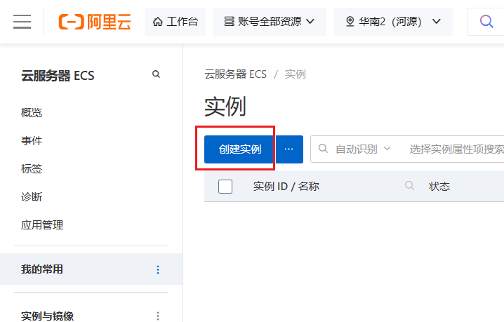
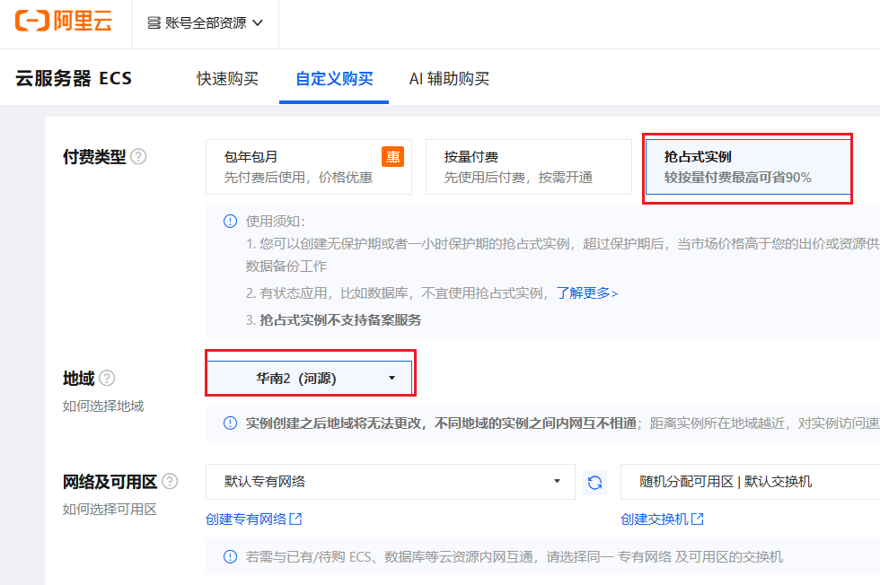
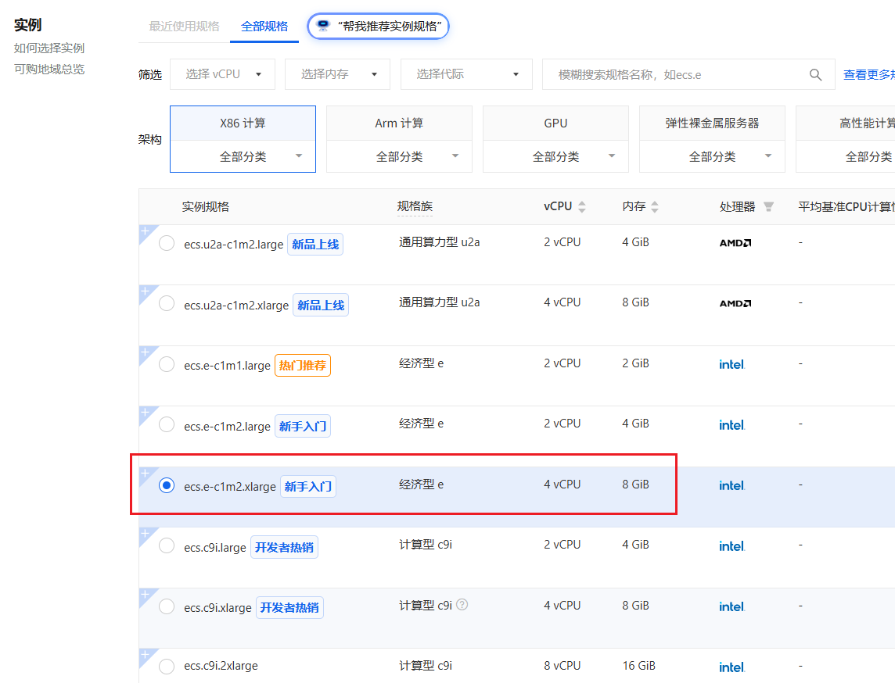
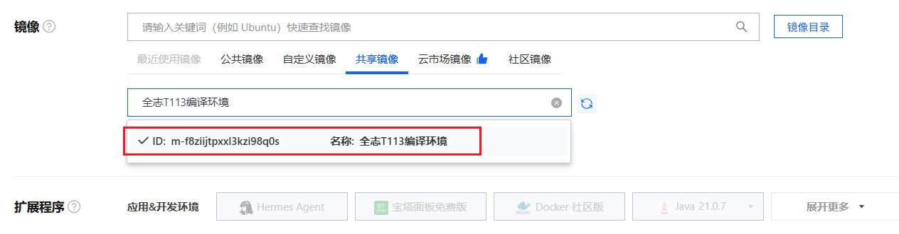
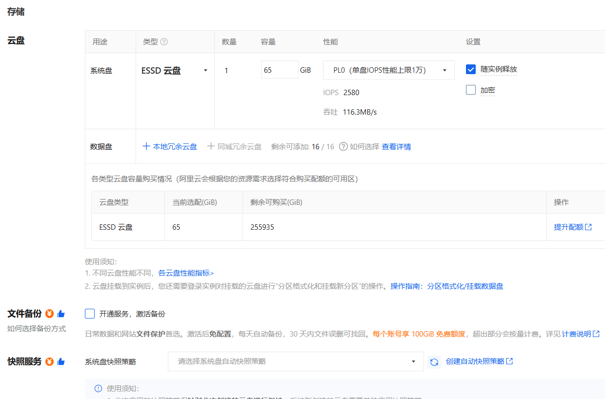
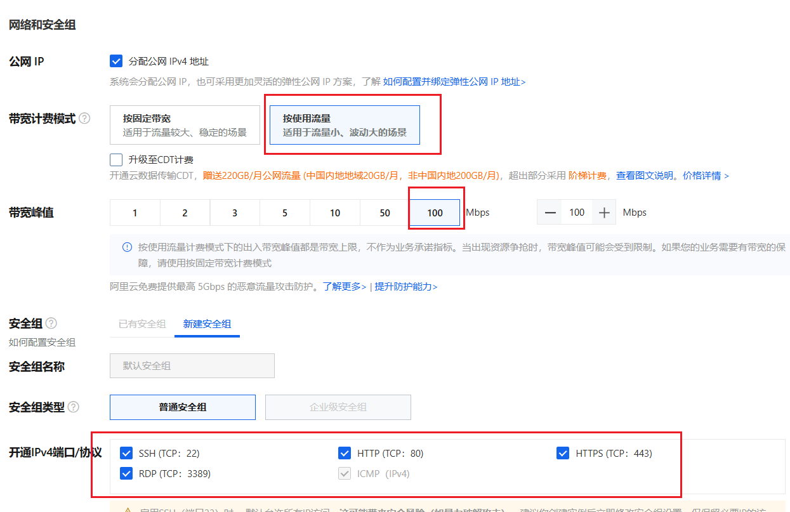
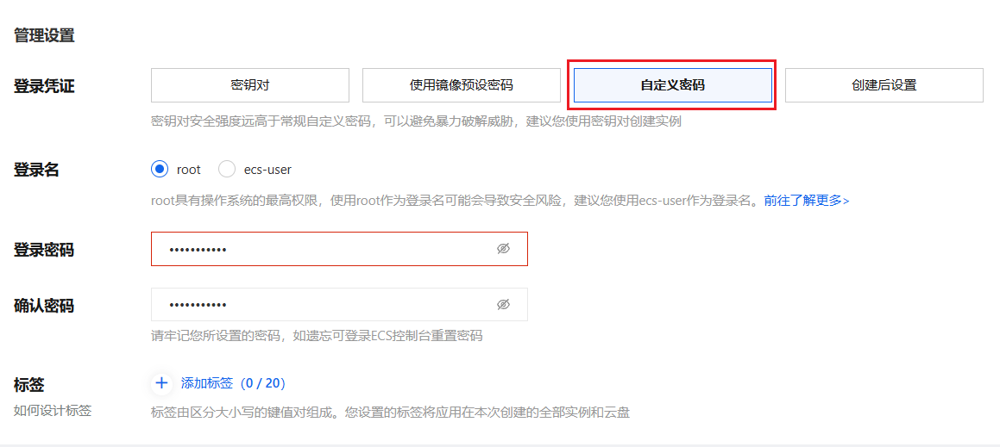
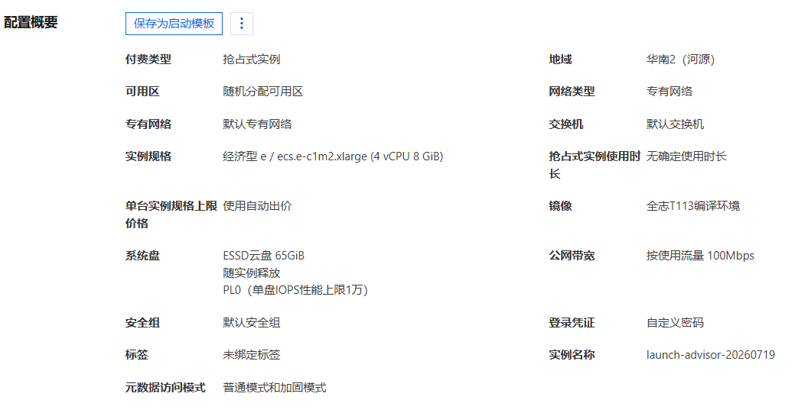
如果账户里面没有足够余额的话，它会提示充值至少100块钱
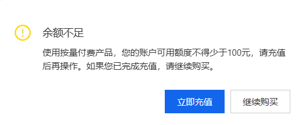
创建成功时候会出现下面这个界面，用完一定要记得停止
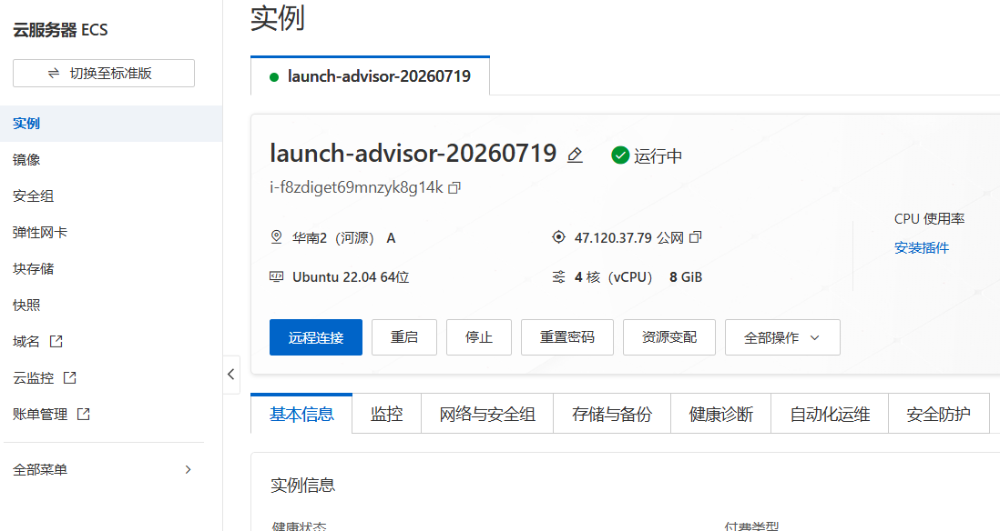
进入远程服务器, ip要用自己的服务器
[codeblock]从远程服务器拉取文件
[codeblock]固件烧录
Windows 烧录
使用PhoenixCard 进行烧录
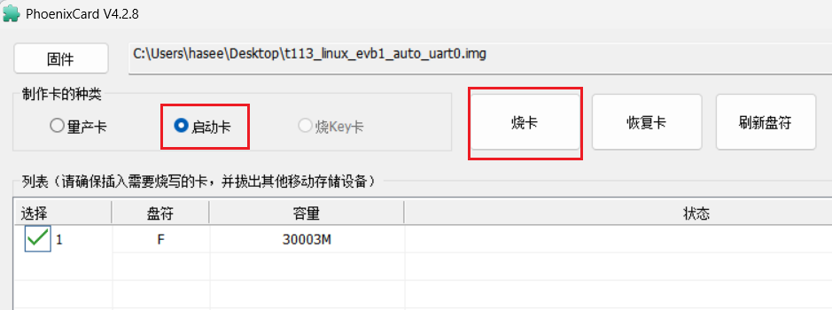
Linux 烧录
准备 OpennixCard
参考教程下载编译源代码：https://github.com/YuzukiTsuru/OpenixCard/blob/master/README_ZH.md
或者直接点这里下载：OpenixCard.zip, 解压后, 进入 OpennixCard 目录
编译安装
[codeblock]转换 img 为标准格式
[codeblock]烧录 img 到 sd 卡
先查看 sd 卡的盘符
[codeblock]找到大小与你 SD 卡大小一致的盘符，例如
[codeblock]一定要将以下/dev/sdX 替换成正确的盘符(例如/dev/sdc)，否则会导致硬盘数据丢失